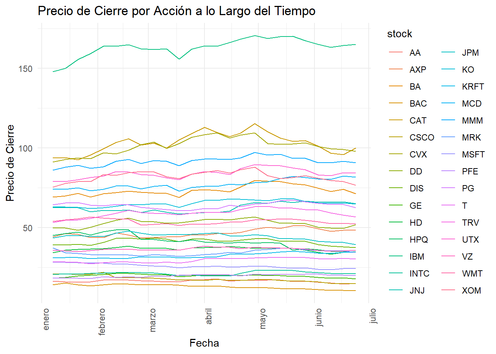
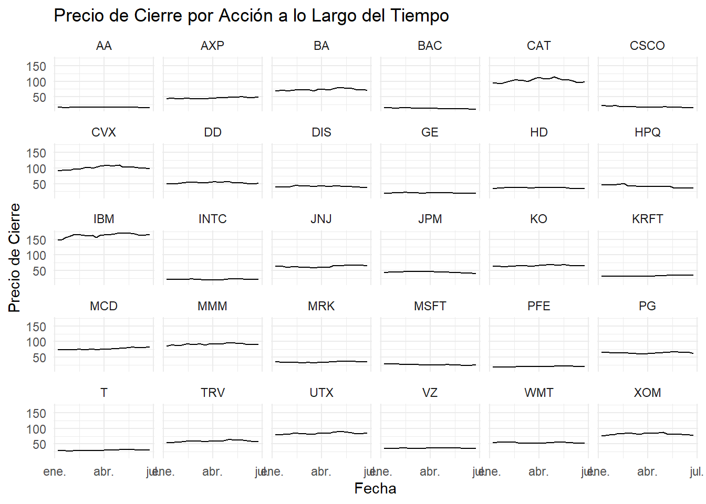
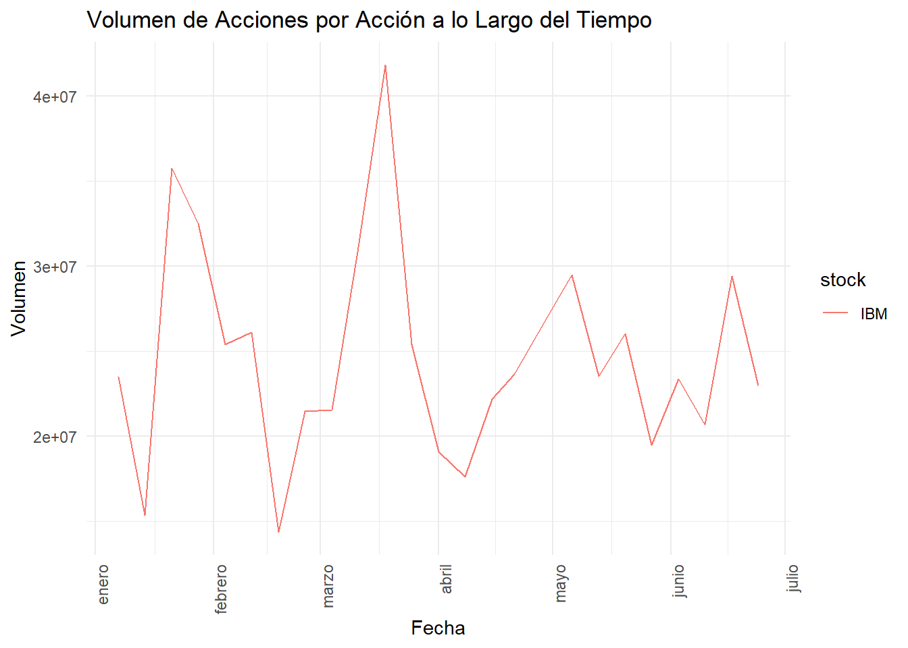
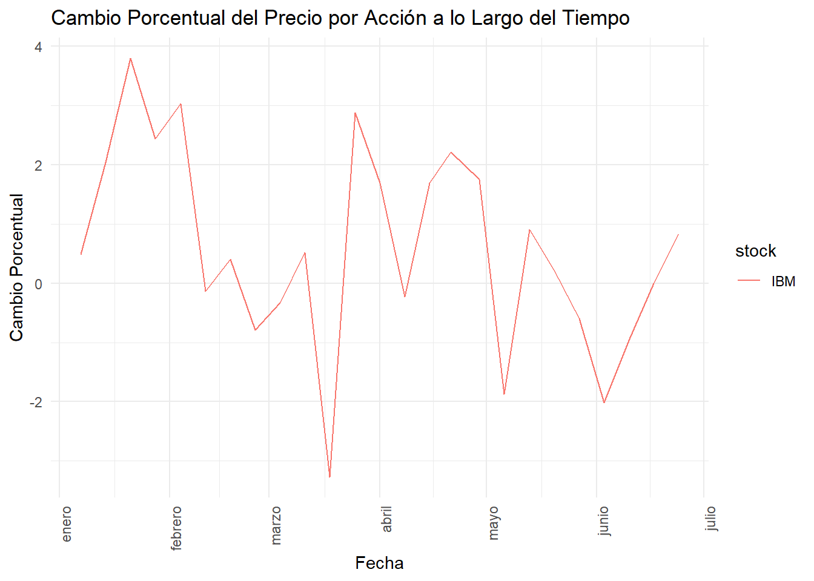

2 Exploracion de datos: EDA
Iniciamos la actividad con cargue de datos, limpieza y comprensión para saber cómo abordar el análisis.
#cargue del data set
folder_path <- "C:/Users/e184385/OneDrive - WFT/Desktop/Msc/Semestre 2/Analisis de series de tiempo/DJI"
file_path <- file.path(folder_path, "dow_jones_index.data")
# Leer el archivo CSV
my_data <- read.csv(file_path, header = TRUE, sep = ",") # `sep` para indicar que es CSVManejo de columnas con caracteres especiales: el archivo tiene columnas con valores monetarios (como $15.82). Para evitar problemas al trabajar con estos datos, se elimina el símbolo $ y se convierte los valores a numéricos:
# Convertir columnas de caracteres a numéricos
numeric_columns <- c("open", "high", "low", "close", "next_weeks_open", "next_weeks_close") # Las columnas que contienen precios
# Remover el símbolo `$` y convertir a numérico
for (col in numeric_columns) {
my_data[[col]] <- as.numeric(gsub("\\$", "", my_data[[col]]))
}Verificación de contenido: después de cargar el archivo y convertir las columnas necesarias, se verifica el contenido para entender la base de datos
## 'data.frame': 750 obs. of 16 variables:
## $ quarter : int 1 1 1 1 1 1 1 1 1 1 ...
## $ stock : chr "AA" "AA" "AA" "AA" ...
## $ date : chr "1/7/2011" "1/14/2011" "1/21/2011" "1/28/2011" ...
## $ open : num 15.8 16.7 16.2 15.9 16.2 ...
## $ high : num 16.7 16.7 16.4 16.6 17.4 ...
## $ low : num 15.8 15.6 15.6 15.8 16.2 ...
## $ close : num 16.4 16 15.8 16.1 17.1 ...
## $ volume : int 239655616 242963398 138428495 151379173 154387761 114691279 80023895 132981863 109493077 114332562 ...
## $ percent_change_price : num 3.79 -4.43 -2.47 1.64 5.93 ...
## $ percent_change_volume_over_last_wk: num NA 1.38 -43.02 9.36 1.99 ...
## $ previous_weeks_volume : int NA 239655616 242963398 138428495 151379173 154387761 114691279 80023895 132981863 109493077 ...
## $ next_weeks_open : num 16.7 16.2 15.9 16.2 17.3 ...
## $ next_weeks_close : num 16 15.8 16.1 17.1 17.4 ...
## $ percent_change_next_weeks_price : num -4.428 -2.471 1.638 5.933 0.231 ...
## $ days_to_next_dividend : int 26 19 12 5 97 90 83 76 69 62 ...
## $ percent_return_next_dividend : num 0.183 0.188 0.19 0.186 0.175 ...Durante el análisis se va a revisar la variación de diferentes acciones (stocks) en el tiempo, revisamos ahora cuantas stocks tenemos en la base de datos
## [1] "AA" "AXP" "BA" "BAC" "CAT" "CSCO" "CVX" "DD" "DIS" "GE" "HD" "HPQ"
## [13] "IBM" "INTC" "JNJ" "JPM" "KRFT" "KO" "MCD" "MMM" "MRK" "MSFT" "PFE" "PG"
## [25] "T" "TRV" "UTX" "VZ" "WMT" "XOM"Para el análisis de serie de tiempo es importante conocer el inicio y final del conjunto de datos.
# Obtener la primera y ultima fecha de data frame
first_date <- min(my_data$date, na.rm = TRUE) # `na.rm = TRUE` para ignorar NA
last_date <- max(my_data$date, na.rm = TRUE)
print(first_date) # Primera fecha## [1] "1/14/2011"## [1] "6/3/2011"Procedemos a identificar los datos faltantes para cada columna del data set
# Contar el número de NA por cada columna
na_count <- sapply(my_data, function(x) sum(is.na(x)))
print(na_count) # Muestra el número de NA en cada variable## quarter stock
## 0 0
## date open
## 0 0
## high low
## 0 0
## close volume
## 0 0
## percent_change_price percent_change_volume_over_last_wk
## 0 30
## previous_weeks_volume next_weeks_open
## 30 0
## next_weeks_close percent_change_next_weeks_price
## 0 0
## days_to_next_dividend percent_return_next_dividend
## 0 0La base de datos tiene datos faltantes, se procede a imputarlos.
# Imputar valores faltantes con la media de la columna
my_data$percent_change_volume_over_last_wk[is.na(my_data$percent_change_volume_over_last_wk)] <-
mean(my_data$percent_change_volume_over_last_wk, na.rm = TRUE)
# Imputar valores faltantes con la mediana de la columna
my_data$previous_weeks_volume[is.na(my_data$previous_weeks_volume)] <-
median(my_data$previous_weeks_volume, na.rm = TRUE)# Contar el número de NA por columna
na_count <- sapply(my_data, function(x) sum(is.na(x)))
print(na_count) # Muestra el número de NA en cada variable## quarter stock
## 0 0
## date open
## 0 0
## high low
## 0 0
## close volume
## 0 0
## percent_change_price percent_change_volume_over_last_wk
## 0 0
## previous_weeks_volume next_weeks_open
## 0 0
## next_weeks_close percent_change_next_weeks_price
## 0 0
## days_to_next_dividend percent_return_next_dividend
## 0 0Orden de data frame: Se convierte la columan Date a formato Date para facilitar analisis en R y se ordenan datos por fecha.
# Convertir la columna 'date' a formato Date
my_data$date <- as.Date(my_data$date, format = "%m/%d/%Y")
# ordenar por fecha
my_data <- my_data[order(my_data$date), ] Visualizacion de datos
library(ggplot2)
ggplot(my_data, aes(x = as.Date(date, "%m/%d/%Y"), y = close, color = stock)) +
geom_line() + # Gráfico de línea
labs(title = "Precio de Cierre por Acción a lo Largo del Tiempo", x = "Fecha", y = "Precio de Cierre") +
theme_minimal() +
scale_x_date(
date_breaks = "1 month", # Etiquetas cada mes
date_labels = "%B" # Mostrar solo el nombre del mes
) +
theme(axis.text.x = element_text(angle = 90, hjust = 1)) # Inclinación de etiquetas
# Gráfico de facetas por acción
ggplot(my_data, aes(x = as.Date(date, "%m/%d/%Y"), y = close)) +
geom_line() + # Gráfico de línea
labs(title = "Precio de Cierre por Acción a lo Largo del Tiempo", x = "Fecha", y = "Precio de Cierre") +
theme_minimal() +
facet_wrap(~ stock) # Facetas para cada acción
La base de datos contiene 30 stock, se decie de crear una base de datos que contenga solo una stock ““IBM” y realizar en adelante todos los analisis sobre esta accion.
# Crear un nuevo data frame con solo IBM
data_ibm <- subset(my_data, stock == "IBM")
# Verificar el nuevo data frame
print(unique(data_ibm$stock)) ## [1] "IBM"## 'data.frame': 25 obs. of 16 variables:
## $ quarter : int 1 1 1 1 1 1 1 1 1 1 ...
## $ stock : chr "IBM" "IBM" "IBM" "IBM" ...
## $ date : Date, format: "2011-01-07" "2011-01-14" "2011-01-21" ...
## $ open : num 147 147 150 155 159 ...
## $ high : num 149 150 157 164 164 ...
## $ low : num 147 146 149 155 159 ...
## $ close : num 148 150 156 159 164 ...
## $ volume : int 23492843 15335348 35770931 32510483 25377163 26106753 14352613 21443811 21549118 31119857 ...
## $ percent_change_price : num 0.489 2.041 3.791 2.439 3.028 ...
## $ percent_change_volume_over_last_wk: num 5.59 -34.72 133.26 -9.11 -21.94 ...
## $ previous_weeks_volume : num 52945558 23492843 15335348 35770931 32510483 ...
## $ next_weeks_open : num 147 150 155 159 164 ...
## $ next_weeks_close : num 150 156 159 164 164 ...
## $ percent_change_next_weeks_price : num 2.04 3.79 2.44 3.03 -0.14 ...
## $ days_to_next_dividend : int 32 25 18 11 4 84 77 70 63 56 ...
## $ percent_return_next_dividend : num 0.439 0.433 0.418 0.408 0.396 ...Gráfico de volumen de acción IBM: El volumen es un indicador clave en el análisis de acciones, ya que muestra la cantidad de acciones negociadas durante un período. se grafica el volumen para ver cómo varía con el tiempo:
library(ggplot2)
# Gráfico de volumen por acción a lo largo del tiempo
ggplot(data_ibm, aes(x = as.Date(date, "%m/%d/%Y"), y = volume, color = stock)) +
geom_line() + # Gráfico de línea para volumen
labs(title = "Volumen de Acciones por Acción a lo Largo del Tiempo", x = "Fecha", y = "Volumen") +
theme_minimal() +
scale_x_date(date_breaks = "1 month", date_labels = "%B") +
theme(axis.text.x = element_text(angle = 90, hjust = 1))
Gráfico de cambios porcentuales de recio La variable:percent_change_price muestra el cambio porcentual en el precio. Graficar esta variable puede proporcionar información sobre la volatilidad y tendencias de los precios de la accion
# Gráfico de cambio porcentual de precio por acción
ggplot(data_ibm, aes(x = as.Date(date, "%m/%d/%Y"), y = percent_change_price, color = stock)) +
geom_line() + # Gráfico de línea para cambios porcentuales
labs(title = "Cambio Porcentual del Precio por Acción a lo Largo del Tiempo", x = "Fecha", y = "Cambio Porcentual") +
theme_minimal() +
scale_x_date(date_breaks = "1 month", date_labels = "%B") +
theme(axis.text.x = element_text(angle = 90, hjust = 1))